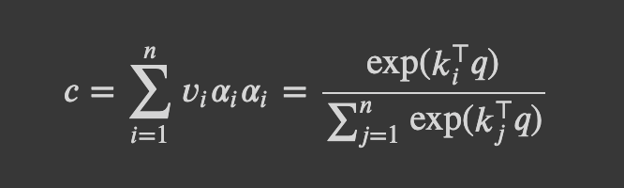
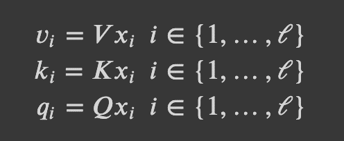
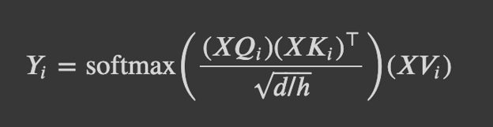
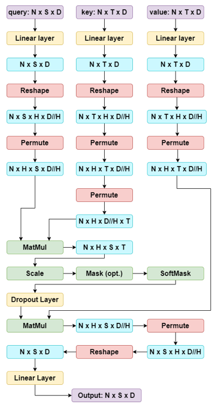
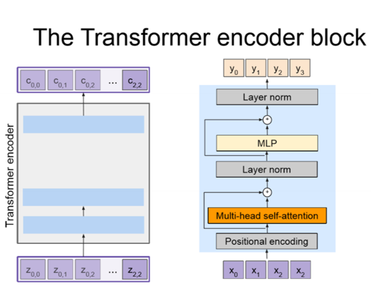
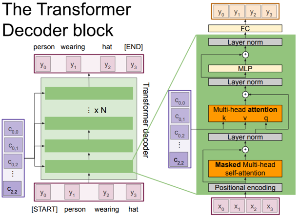

Table of Contents:
In “Attention Is All You Need”, Vaswani et al. introduced the Transformer, which introduces parallelism and enables models to learn long-range dependencies–thereby helping solve two key issues with RNNs: their slow speed of training and their difficulty in encoding long-range dependencies. Transformers are highly scalable and highly parallelizable, allowing for faster training, larger models, and better performance across vision and language tasks. Transformers are beginning to replace RNNs and LSTMs and may soon replace convolutions as well.
Let’s refresh our concepts from the attention unit to help us with
transformers.

With query q (D,), value vectors {v_1,…,v_n} where v_i (D,), key
vectors {k_1,…,k_n} where k_i (D,), attention weights a_i, and output c
(D,). The output is a weighted average over the value vectors.

Combining the above two, we can now implement multi-headed
scaled dot product attention for transformers.

We can then apply dropout, generate the output of the attention
layer, and finally add a linear transformation to the output of the
attention operation, which allows the model to learn the relationship
between heads, thereby improving the model’s expressivity.
There’s a lot happening throughout the Multi-Headed Attention so hopefully this chart will help further clarify the intermediate steps and how the dimensions change after each step!

To create the multiple heads, we divide the embedding dimension by the number of heads and use Reshape (Ex: Reshape allows us to go from shape (N x S x D) to (N x S x H x D//H) ). It is important to note that Reshape doesn’t change the ordering of your data. It simply takes the original data and ‘reshapes’ it into the dimensions you provide. We use Permute (or can use Transpose) to rearrange the ordering of dimensions of the data (Ex: Permute allows us to rearrange the dimensions from (N x S x H x D//H) to (N x H x S x D//H) ). Notice why we needed to use Permute before Reshaping after the final MatMul operation. Our current tensor had a shape of (N x H x S x D//H) but in order to reshape it to be (N x S x D) we needed to first ensure that the H and D//H dimensions are right next to each other because reshape doesn’t change the ordering of the data. Therefore we use Permute first to rearrange the dimensions from (N x H x S x D//H) to (N x S x H x D//H) and then can use reshape to get the shape of (N x S x D).
The role of the Encoder block is to encode all the image features (where the spatial features are extracted using pretrained CNN) into a set of context vectors. The context vectors outputted are a representation of the input sequence in a higher dimensional space. We define the Encoder as c = T_W(z) where z is the spatial CNN features and T_w(.) is the transformer encoder. In the “Attention Is All You Need” paper a transformer encoder block made up of N encoder blocks (N = 6, D = 512) is used.

Let’s walk through the steps of the Encoder block!
The Decoder block takes in the set of context vectors C outputted from the encoder block and set of input vectors X and outputs a set of vectors Y which defines the output sequence. We define the Decoder as y_t = T_S(y_{0:t-1},c) where T_D( .) is the transformer decoder. In the”Attention Is All You Need” paper a transformer decoder block made up of N decoder blocks (N = 6, D = 512) is used.

Let’s walk through the steps of the Decoder block!
Layer Normalization: As seen in the Encoder and Decoder block implementation, we use Layer Normalization after the Residual Connections in both the Encoder and Decoder Blocks. Recall that in Layer Normalization we are normalizing across the feature dimension (so we are applying LayerNorm over the image features). Using Layer Normalization at these points helps us prevent issues with vanishing or exploding gradients, helps stabilize the network, and can reduce training time.
MLP: Both the encoder and decoder blocks contain position-wise fully-connected feed-forward networks, which are “applied to each position separately and identically” (Vaswani et al.). The linear transformations use different parameters across layers. FFN(x) = max(0, xW_1 + b_1)W_2 + b_2. Additionally, the combination of a self-attention layer and a point-wise feed-forward layer reduces the complexity required by convolutional layers.
Additional resources related to implementation: